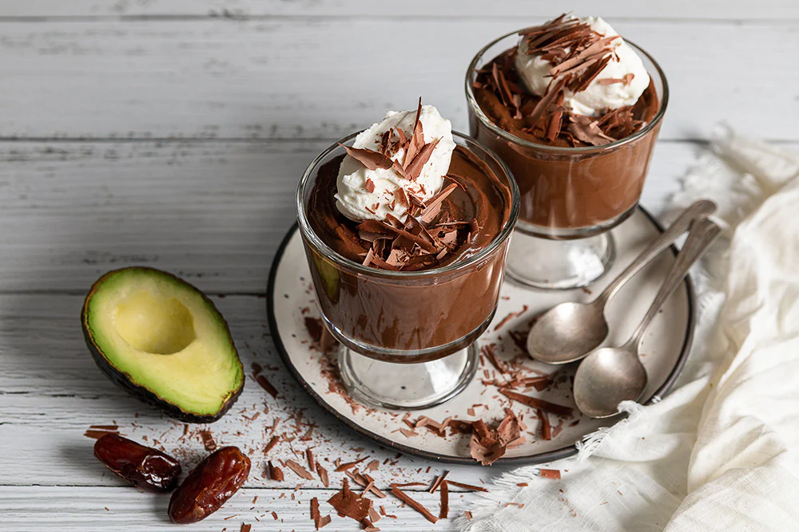

Welcome to our Desserts section, where indulgence meets nutrition! Here, you’ll find recipes that satisfy your sweet cravings without compromising on health.

| Servings | Prep Time | Cook Time |
|---|---|---|
| 2–3 | 10 mins | 0 mins |
Tip: Add almond butter or coconut cream for extra richness.
| Servings | Prep Time | Cook Time |
|---|---|---|
| 2 | 5 mins | 5 mins |
Tip: Soak oats overnight for a quick no-cook version.